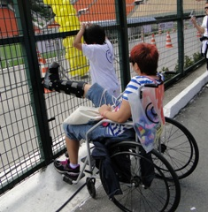
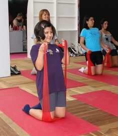
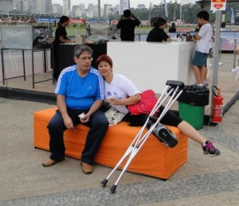
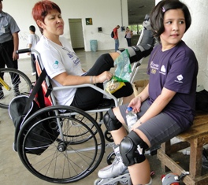
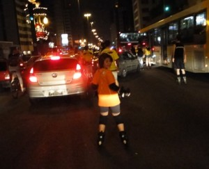
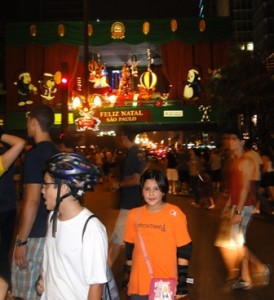
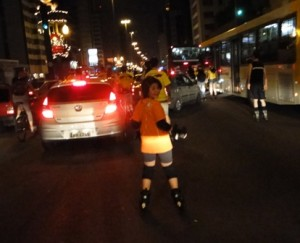
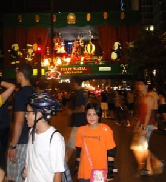
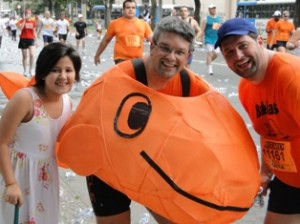
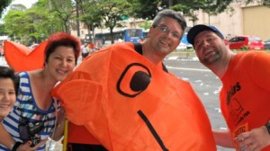

vamo, vamo, vamo…
Feliz Ano Novo, 2011 promete…
De início quero desejar a todos nossos colegas, amigos, amigos dos amigos, seguidores deste blog um Feliz Ano Novo!!!
Depois do meu acidente, ou melhor, do meu entorse no tornozelo direito grau II, tive minha rotina diária mudada literalmente, passei 3 semanas andando de muletas, fui proibida de colocar o pé direito no chão e sessões de fisioterapia já na segunda semana do acidente.
Apesar de aleijada, não fiquei afastada do escritório, só que nessa fase meu tempo acabou se tornando restrito, minha locomoção lenta, gelo no local a cada 3 hs, fisio e, em casa além do repouso acabei por me desligar de muitas coisas, meu pensamento voava ao tempo de recuperação, controlar o inchaço do tornozelo mantendo sempre a perna elevada.
Só que novembro acabou tornando-se um mês frustrante, havia feito inscrição para correr todos os finais de semana. Em alguns correria com Melinha e em outro iríamos assistir Syssi. Acabei por administrar essa frustração, pedindo para o Igor correr no meu lugar, aliás o tempo dele foi bom e Melinha também, o que me deixou feliz por eles.
Inscrevi a Syssi na Corrida Infantil da Corpore e fui vê-la participar de cadeira de rodas, até esbarramos com o Claudião por lá, lógico, Henrique também participou!

A entrega do kit d Circuito Vênus aconteceu no Jóquei – que não tem acesso para deficientes, uma grande falha –, desci as escadarias de muletas, devagar mas fui, olhei alguns stands dos patrocinadores e Syssi fez uma aula de Pilates, até pensei em participar da corrida com o auxílio do Igor empurrando a cadeira de rodas, no fim desisti, achei que seria muito sofrimento para ele.
 
Após 3 semanas do acidente, fui liberada para andar de muletas com o pé no chão e mais sessões de fisioterapia. Ah, detalhe, sempre de robofoot dia e noite, um trem horrível para andar, mas de muita estabilidade para meu tornozelo.
Durante este tempo, acabei por descobrir uma nova modalidade, acompanhando Syssi em suas aulas de patinação no Ibirapuera me encantei com o esporte.

Frustrada tentei ficar longe dos esportes, só tentei porque através de mala direta recebi um convite para patinar na Av. Paulista no dia 25 de dezembro a noitinha para ver as decorações natalinas na avenida que é tida como o coração financeiro da cidade. Como passamos no Natal aqui em Sampa, dia 25 eu, Silvio e Syssi fomos participar desse evento, mas tipo assim (rs), eu de robofoot e bengala só fiquei na vontade e acabei por andar na Paulista vendo e filmando as decorações, o tempo estava maravilhoso, muitas pessoas na rua usando 1 pista da avenida, os carros trafegando devagar, todos sem stress, uma Av. Paulista difícil de ver em outras ocasiões. O papai Silvio foi correndo acompanhar a filhota Syssi que patinou com os demais. (agora esse problema está solucionado, Silvio acabou de adquirir seu patins!!)
  
 
Já na 6ª. semana do acidente eu andava de imobilizador de tornozelo apenas em casa.
Como não podia ser diferente, passei o Natal de robofoot, mas ansiosa pelo retorno a ortopedista no dia 30/12 que ao examinar meu tornozelo (o calcanhar já estava firme, uauhhhhhhhh) determinou andar somente com imobilizador de tornozelo, liberando para hidroginástica e bicicleta sem peso. Esse foi meu presente de Natal!!! O diagnóstico de que o ligamento já restabeleceu.
Dia 31 o dia mais esperados por algo em torno de 15.000 corredores além do Claudião, Alex e Thiago, aconteceu a São Silvestre e, para prestigiar nossa galera e tantos outros corredores fomos (minha vizinha para ver o sobrinho, eu e Syssi para ver os Ex-Sedentários) até a Av. São João, um pouco antes da subida do Elevado, estava eu lá como espectadora para ver a corrida, tão diferente de outrora.
Confesso que nem na TV eu apreciava ver a SS, mas este ano sai para a rua. Depois da corrida feminina, vimos os batedores acompanhando a elite masculina e mais atrás o restante dos corredores……… era um mar de pessoas descendo a S. João sem noção ……, meu coração disparava, a vontade de estar correndo (e nem precisava ser na SS, em qualquer corrida) foi muito grande, mas devo me limitar a apenas sentir emoções neste momento.
Enquanto eu filmava na câmera, minha amiga via a transmissão no MP7, ficamos ali sabendo da vitória da queniana e um pouco mais tarde da vitória do Marilson, mas o mar de corredor continuava descendo a S. João e dentre eles o Claudião que acabei por ver de relance depois da passagem do sobrinho de minha amiga. Dali fomos acompanhar a corrida na Av. Rio Branco esquina com Helvetia, nesse trecho os corredores já demonstravam cansaço … foi então que consegui ver o Claudião acompanhado do Alecão e tiramos umas fotos juntos………
 
Agora estou em nova fase de tratamento, fortalecimento muscular e treinamento proprioceptivo para que não ter lesão recidiva. Incomoda apenas andar de imobilizador de tornozelo com tênis. Em casa, tenho andado descalça, já que o imobilizador prende um pouco a circulação.
Enfim foram 60 dias e estou me recuperando, mas ainda sinto seus sinais, sei que ainda tenho um pouco mais de tempo para voltar a praticar esporte de impacto, mas é questão de tempo, quem sabe no final de fevereiro eu não volte para as ruas?! Quer correndo….. ou patinando.
Estou voltando………….. deixo aqui meu grande abraço e um 2011 com muita, mas muiiiiiiiiiiiiiiiita S A Ú D E e quem sabe não nos esbarrarmos nas corridas de rua durante o ano?!
.jpg "DSC01730 (1024x576)")
.jpg "DSC01861 (1024x576)")
.jpg "DSC01896 (576x1024)")
.jpg "DSC01904 (1024x576)")


{kind=link}
{kind=link}
Ei Ana. Cláudio me disse que você estaria em um ponto da SS. Provavelmente foi no ponto que segui com a Elis e Cláudio foi resgatar Alecão. Uma pena não conhecê-la. Espero que melhor logo. Se eu tiver um treco desse, tô ferrado. Abraço. Miguel Delgado.
Miguel,
realmente eu estava perto do inicio do elevado do lado direito da descida da S.Joao, mas com a muvuca de corredores e espectadores ficou dificil, Sei que a Syssi disse ter visto uma camiseta com uma Baleia, mas nao vi pq estava gravando e olhando rapidamente, quando vi o Claudio já estava de costas………… pena mesmo, mas nao faltará oportunidades.
Nao desejo essa parada forçada a ninguem, mas acho que já estava escrito nas estrelas eu passar por essa prova.
obrigada
abs
Ana
Ana quanto tempo?
Deve ser duro ficar olhando o povo correr e não poder, mas logo estará de volta as corridas.
E a Ana Amélia não vai postar suas corridas aqui?
Boa sorte na recuperação
abs
Ana, adorei te encontrar na Rio Branco… Estava morto por causa da subida do pontilhão entre a Rudge e a Rio Branco. Sei que parei, tirei foto com vocês e uma alegria geral contagiou que me motivou a correr até o largo São Francisco.
Muito legal participar desta festa em que os Ex-sendetários estavam lá. Alguns correndo, outros assistindo. Sempre pergunto de você para o Claudio. Seus textos sempre me animaram. Estamos na torcida pela sua volta correndo e patinando.
Falando em patinar. A Olívia (minha filha) adora patinar. Podemos marcar um dia no Ibirapuera para ela e a Syssi patinarem. Minha paixão mesmo sempre foi a bicicleta, uso a corrida para conseguir emagrecer e voltar a pedalar.
Vamo, vamo, vamo…
Oi, Ana. Que batalha, hein? Parabéns pela serenidade com que encarou tudo isso, certamente não foi nada fácil. Mas ainda bem que pelo menos a pior parte já passou. Siga firme se preparando para o retorno, muito em breve você vai estar de novo nas ruas. Nos vemos nas corridas de 2011.
Abraço!
oi, ana!!!
que momento difícil, hein, ana!
mas você está superando cada etapa dessa recuperação com garra e determinação!
espero que logo em breve você possa estar de volta às corridas!
linda sua filha! vou procurar umas aulas dessas de patinação pra aninha, minha filhota!
que pena que não encontrei você na são silvestre! teria amado conhecê-la pessoalmente!
estou na torcida por você, ana!
melhoras!
beijão!
Bom só eu sei como vc se sente né mãe? reclama daqui, reclama de lá, as vezes até desanima dizendo que não ensa em voltar a correr…sei que é díficil, mas estamos todos aqui pra lhe dar a força e em breve vc estara correndo de novo… 🙂
Miguel
Eu estava bem próximo do início do elevado, sei que a Syssi disse ter visto uma baleia na camiseta e acho que poderia ter sido vc, como estava filmando na máquina e de olho nos corredores perdi alguns lances……. Fica para uma próxima nosso encontro…..rs………
brigaduuuuuuuuuuuuu
Ana
Thiago,
Um tempinho mesmo. Realmente não foi fácil, mas o tornozelo me faz ficar contida….. pq uma passada mais rápida ele dá seu grito, mas o coração confesso que bateu forte e os olhos marejaram. Já está chegando ao fim essa tortura, estou fazendo tudo para ter uma ótima recuperação.
É precisamos cobrar duro e forte os post da Melinha
brigaduuuuu
abs
Ana
Alecão,
Vc nao imagina minha ansiedade em vê-los na rua, tanto que a filmagem saiu por vezes tremida, pq uma ficava na camera e outra nos corredores e eis que vejo o Claudiao de longe e gritei, foi muito emocionante a diagonal feita na rua, o nosso reencontro na avenida….. eu bem que via os corredores cansados….
Muito bacana que o “pit stop” para as fotos te fez recarregar de energias, pois era isso que eu pretendia fazer ao assisti-los, isso não tem preço!!!
É ficamos sabendo das coisas via Claudiao que é uma figura muito querida. Me deixa lisonjeada saber que vc gosta de meus enorrrrrrrrrrrrrrrrmes posts…….(rs)
Quando eu já puder treinar, poderemos marcar patinação para as meninas (já que o Silvio adquiriu seu patins) e um treino para nós no Ibirapuera.
Ah, eu também gosto de andar de bike e o fazia no Ibirapuera…… andar na rua tenho medo e tb não tenho uma magrela……
É isso ai……….
abs
Ana
Oisssssssss, Fábio,
Realmente o destino armou, não foi fácil querer que a recuperação ocorresse antes do tempo. Mesmo sem fazer esporte entravada entre muletas e robofoot só em ver as corridas, ler os post minha adrenalina aumentava e vc fica nos “se”……… que agora parecem estar chegando ao fim.
Obrigada pelas suas palavras e em 2011 nos encontramos nas corridas.
Abs
Ana
Elis,
grande cia do Claudiao nos treinos para a maratona dele em Curitiba….
realmente tem sido dureza esta fase, mas estou igual a uma formiguinha, carregando as energias, cuidando muito bem do tornozelo (nosso grande instrumento de divertimento que é a corrida).
Fiquei realmente tristinha em não tê-la conhecido e ao Delgado que estiveram tão perto de mim……….sniffffffffff, mas oportunidades não faltarão……..
Obrigada, tenho filhotas lindas (a mãe coruja passou longe daqui……rs), sua filhota vai amar andar de patins, depois vc tb vai querer para poder estar com ela num divertimento hiper familiar (pq a corrida é bem individualista, eu vejo assim, algo entre vc e seus pensamentos, seu psique, um estado de extrema introspecção), bom, esta é minha ótica, já que fiquei assistindo na cadeira a Syssi tenho aulas.
Obrigada pelo seu comentário e torcida, logo nos veremos nas ruas…….
um grande beijo
Ana
Melinha
Vc pode acompanhar bem de perto a minha 1a semana de repouso absoluto, não foi fácil………e as vezes acabamos nos entregando ao desanimo do momento, quer por estar bem limitado nos movimentos, quer pela dor, quer nos pensamentos e dúvidas se poderei voltar a ter um tornozelo zerinho para aguentar os impactos que virão depois da recuperação, os pensamentos voam e muito,
mas a fisio faz com que vc começe a ter mais certeza de que pode ser que isso não se repita, diminue a dor e o tempo acaba por trazer aquela confiança de que vai ser possível ter uma vida sem limitaçoes, e que tudo tem o seu tempo.
Logo estarei por ai nas corridas novamente,
jks
Mamys
[…] que a Andrea assistiu, Thiago superou seu tempo do ano passado (e continua sendo meu herói), Ana assistiu também e Claudião… brilhou como mascote dos Baleias (vestido de […]
ana,
na próxima SS vc e a Ana Amélia vão abrilhantar ainda mais esta festa. Vc é guerreira e já provou que não desistirá de se divertir com corrida e com a gente, claro.